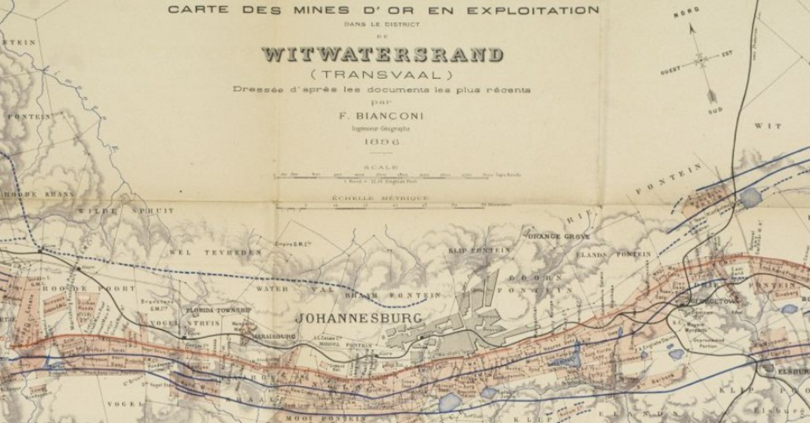

Introduction
Unofficial symbols of colonial logic persist in Johannesburg as a legacy of Apartheid. Despite its official conclusion in 1994, residents of Johannesburg face the ongoing challenge of the state’s participation or, at least, complicity in maintaining past elements of the Apartheid status quo. This emerging post-apartheid landscape
1
continues to draw from those unresolved inequalities of apartheid, developing as new urban forms such as the gated communities north of the gold reef. This project seeks to create a transect model, from North to South of our collective psycho-geographical map of Johannesburg. Mapping, as a medium, inherently makes several normative assumptions. My method is an attempt at moving beyond these hierarchical assumptions by taking an interpretative approach towards representing and synthesizing some of our readings on Johannesburg. The transect is a reinterpretation of the traditional North arrow or North-South orientation of mapping techniques, as well as an acknowledgement of their limitations.

I: Diepsloot and New Informality
Diepsloot, or “deep ditch” in Afrikaans, is an informal settlement at the north end of our transect. With a population now totaling over two hundred thousand, this settlement has grown exponentially since the end of Apartheid. Due, in part, to the government’s failure to meet housing demands despite its promise of providing a brick house for every citizen, the growing settlement represents the widening gap between this post-apartheid dream and reality. The map below shows the built environment in white, combining both formal and informal structures into one cohesive footprint contrasting sharply with the natural areas which appear in black.Views on the streets of Diepsloot.
Data Source: GroundUp Johannesburg
However, new informality exists in Johannesburg for those with financial means, as well. Most recently, AirBnB listings marketed towards international tourists have proliferated around the city center. Their prevalence provides an example of what Keller Easterling referred to as the “Extrastatecraft,”Data Source: GroundUp Johannesburg
2
or power beyond state actors and within networks of infrastructure space. AirBnB listings can be explored in the interactive map below.
AirBnB Concentration between the Gated Communities and CBD
Sources: Stay22 and Open Street Maps
Sources: Stay22 and Open Street Maps
II: Gated Communities
As seen by the relative spatial densities of AirBnBs, those with the racial and often as a consequence, economic, means to leave or otherwise avoid the less affluent parts of the city will often choose to do so. The next aspect of this transect, just south of Diepsloot but not quite to the CBD, refers to the gated communities. Having multiplied after the formal end of Apartheid, these gated communities are a physical response to the reactionary politics post-apartheid. Utilizing both informal and state-facilitated means of creating residential segregation, their growth represents the ongoing fears of both the central city and integration between social classes. They're outlined in purple on the following map by the Gauteng City-Region Observatory.Gated Communities in Johannesburg by Type
Source: Afrigis
Source: Afrigis
III: Bree Street
This transect has not just an economic focus, but also locates where race and gender are spatialized, by considering the "intimate, networked, and fractal nature of black hair braiding spaces on Bree Street which disrupt the rigid colonial spatial orders and grand narrative of Johannesburg in ‘crisis.’”
3
These spaces provide counter-narratives and an insight into the lived reality of the city as a space of social regularity and provisionality.4
The value and meaning of these spaces remains undetected by the grand narrative of "crisis," as the same narrative unwittingly allowed for these spaces to flourish through the process of white flight from the CBD to the Gated Communities.
Bree street, officially renamed in September 2015 as Lilian Ngoyi Street in spite of some mixed feelings among residents, was among several streets renamed after ANC politicians. This main street also includes a direct connection to the Taxi Rank of downtown, and thereby serves as a node for both immigration and local transportation networks.

Contrasting architecture between the Taxi Rank and Dutch Colonial buildings on Bree Street
Source: Google Maps Streetview
Source: Google Maps Streetview
IV: The Gold Reef
The "Gold Reef" remains prominent as the original agglomeration economy of the CBD, its origin myth or narrative dating back to the original discovery of gold and speculation in 1886. 
1896 Gold Mines Map
Source: Witwatersrand Transvaal
Used today even as a quiet place for prayer, the mine dumps remain central to the city's past and future. While environmental and health concerns are increasingly in the public consciousness, this allows for mining companies to cite safety concerns in order to prompt the government to evict residents, then benefit from remining the dumps once settlements are cleared.Source: Witwatersrand Transvaal
5
Prominence of the Gold Reef contrasted with the CBD
Source: Google Earth
Source: Google Earth
V: Soweto
The Southwest Township or 'Soweto' closes out our transect model south of the mines. As the original township which has since become an icon for resilience to apartheid among South Africans, Soweto serves as a model for how social value can be brought to spaces without an ongoing assigned capital value. Defying colonial logic, inside the township "everybody knows everybody else, where they come from, and how their parents met. [By comparison,] The city is a no man's land."
6
The painted cooling towers of the decommissioned coal-powered Orlando Power Station in Soweto.
Source: Magic Travel & Tours
Source: Magic Travel & Tours
Today, legacies of spatial segregation are premised on these invisible infrastructures of categorization such as the map which were utilized during apartheid. Along with passbook registration originally implemented by the Group Areas Act in 1913, traditional map and census categorizations have normalized the ongoing exclusive urbanism in Johannesburg. These aspects of the Johannesburg transect begin to show us the variety of reactions to how colonial and thereby racial spatial logics have unofficially persisted, and how these different reactions work simultaneously towards and away from the former Apartheid state.
Cities are inherently immeasurable, in that they are an aggregate of the constant interplay between a myriad network of actors and their power relations. This transect model is an attempt to essentialize these noticeable geographic differences into latitude-based partitions and delineate their interconnected characteristics.
Please note: footnotes not visible on mobile.
Return to Student Projects